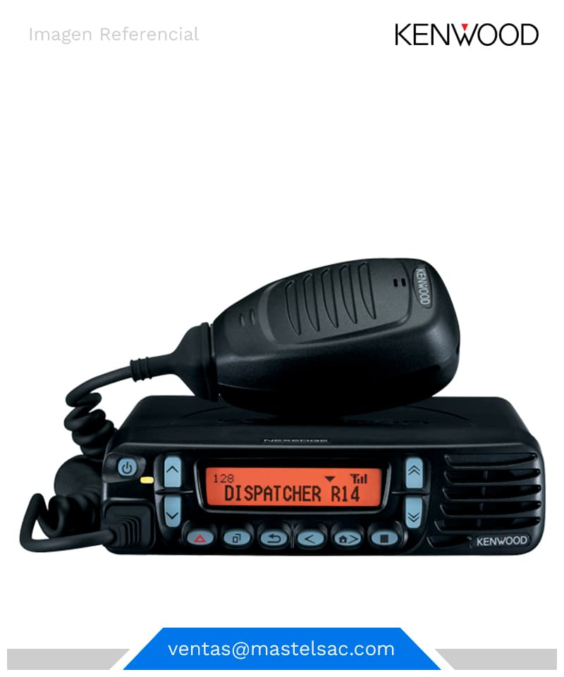
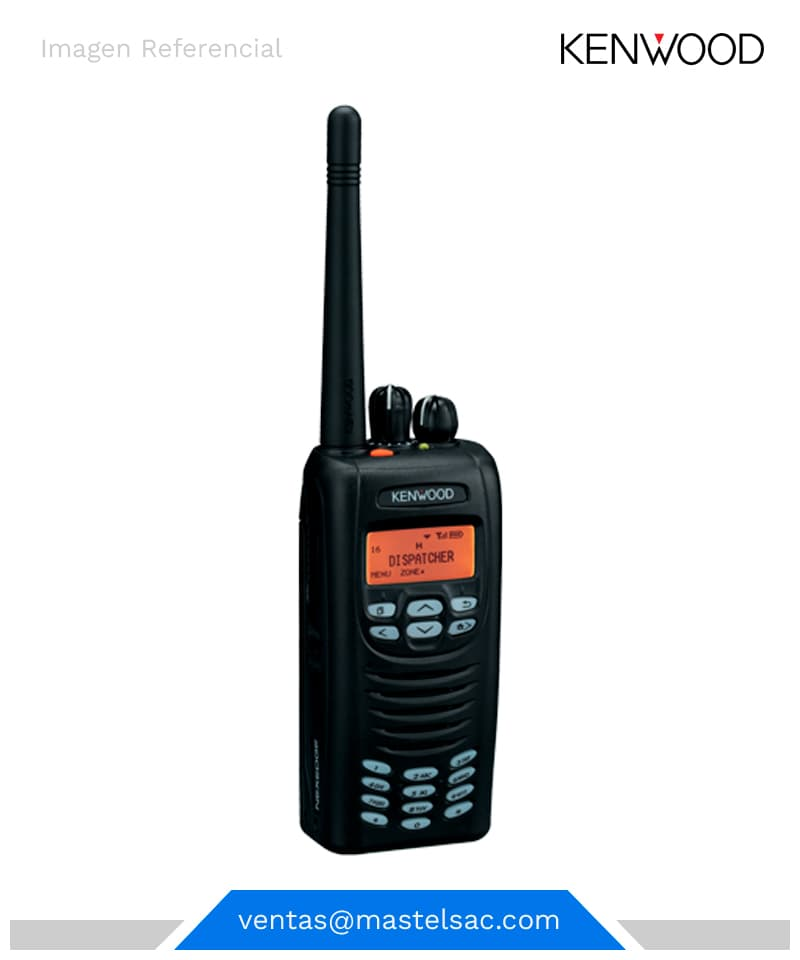
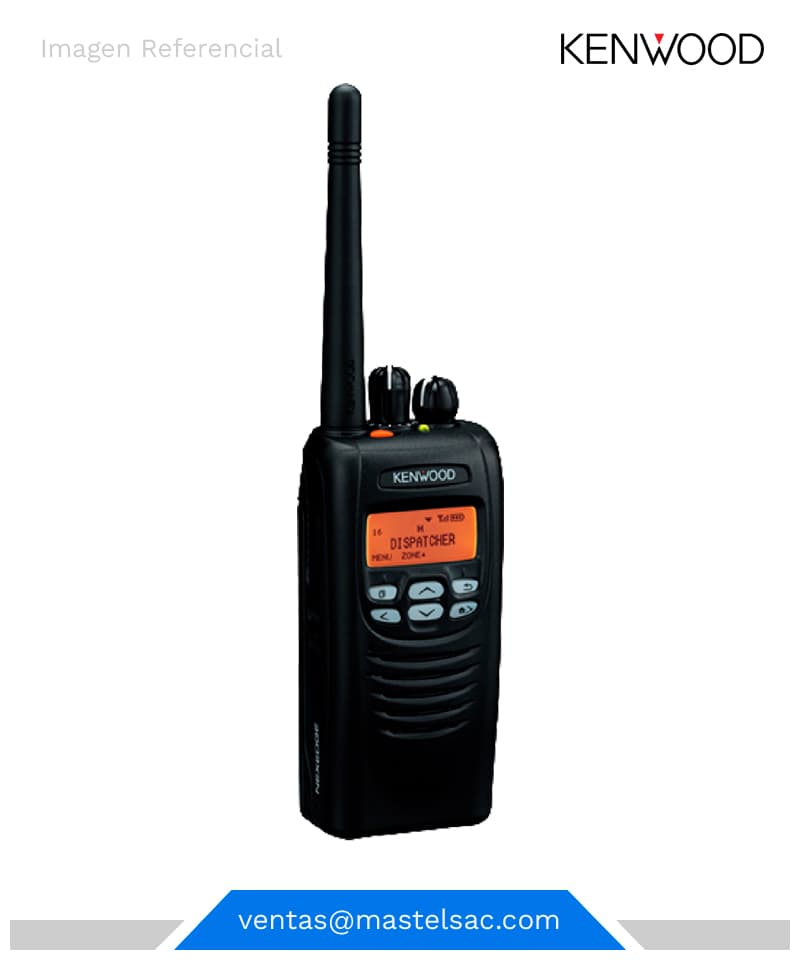

RADIOS DIGITALESRADIO DIGITAL KENWOOD NX-700 MÓVILRADIO DIGITAL KENWOOD NX-740 MÓVILRADIO DIGITAL KENWOOD NX-3720 MÓVILRADIO DIGITAL KENWOOD NX-5700 MÓVILRADIO DIGITAL KENWOOD NX-200 PORTÁTILRADIO DIGITAL KENWOOD NX-220 PORTÁTILRADIO DIGITAL KENWOOD NX-240 PORTÁTILRADIO DIGITAL KENWOOD NX-300 PORTÁTILRADIO DIGITAL KENWOOD NX-320 PORTÁTILRADIO DIGITAL KENWOOD NX-340 PORTÁTILRADIO DIGITAL KENWOOD NX-3220 PORTÁTILRADIO DIGITAL KENWOOD NX-3320 PORTÁTILRADIO DIGITAL KENWOOD NX-5200 PORTÁTILRADIO DIGITAL KENWOOD NX-5300 PORTÁTIL
RADIOS ANALÓGICOSRADIO ANALÓGICOS KENWOOD TK-90 MÓVILESRADIO ANALÓGICOS KENWOOD TK-7302 MÓVILESRADIO ANALÓGICOS KENWOOD TK-7360 MÓVILESRADIO ANALÓGICOS KENWOOD TK-8360 MÓVILESRADIO ANALÓGICOS KENWOOD TK-2140 PORTÁTILESRADIO ANALÓGICOS KENWOOD TK-2000 PORTÁTILESRADIO ANALÓGICOS KENWOOD TK-2170 PORTÁTILESRADIO ANALÓGICOS KENWOOD TK-2402 PORTÁTILESRADIO ANALÓGICOS KENWOOD TK-3000 PORTÁTILESRADIO ANALÓGICOS KENWOOD TK-3170 PORTÁTILESREPETIDORA ANALOGICO KENWOOD NXR-710REPETIDORA DIGITAL KENWOOD NXR-700
 Av. Ral. Trinidad Moran N° 274 Lima 14 - Perú
Av. Ral. Trinidad Moran N° 274 Lima 14 - Perú 999-958-692
999-958-692 ventas@mastelsac.com
ventas@mastelsac.com Lun-Vier: 09:00 am a 18:00 pm / Sab: 09:00 am a 13:00 pm
Lun-Vier: 09:00 am a 18:00 pm / Sab: 09:00 am a 13:00 pm